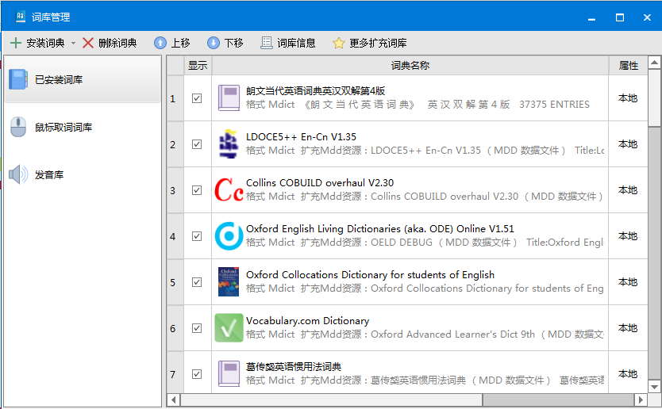

如果你是一位对自己要求较高的英语学习者，你应该了解一下欧路词典。
如果你是一位英语专业的学生，那么你更应该了解一下欧路词典。
欧陆词典是一款支持多设备(Android, iOS, Windows, mac)的词典软件。因其可以『自定义导入mdd/mdx格式词典』以及『多设备同步』的特点，该词典在实用性上比其他世面主流的词典都要优秀。
对于欧路词典，不会用的人浮于欧路词典的表面而不明白其高评价的原因。
会用的人如鱼得水，并且赞不绝口。
大多数人并没有认识到欧路词典优秀的特性，以至于认为欧陆词典仅仅『在界面上』和『无广告』上比大多数国产词典要优秀。在未安装任何第三方词典的情况下，欧陆词典自带的词典是比较弱的。
同样查询一个单词，自带词典只简单提供了中文释义，
而我们自定义导入的词典提供了海量的信息供我们查询，包含但不限于：
例句，常用搭配，同义词辨析，适用语境，语料库，单词随着几个世纪过去后使用频率的趋势……
诚然，作为一个对自己有要求的英语学习者，应该学会主动查阅权威词典和阅读英英解释。
欧陆词典本身只作为第三方词典的载体，导入了各种自定义第三方词典后才使其变得十分强大。
欧路词典界面（Windows版）

欧路词典首创LightPeek 取词，可以做到即指即译，划词搜索，跨软件取词。